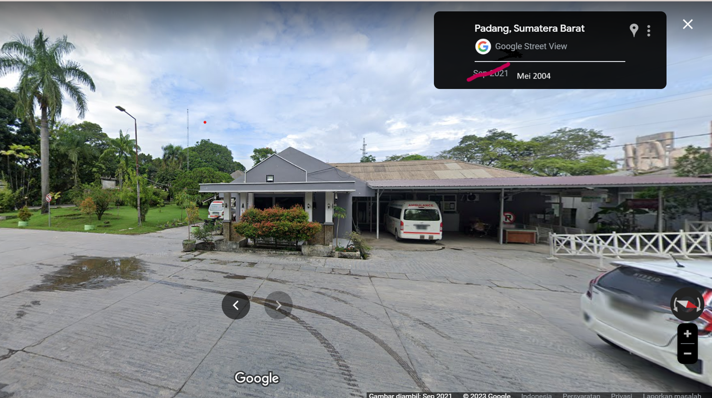
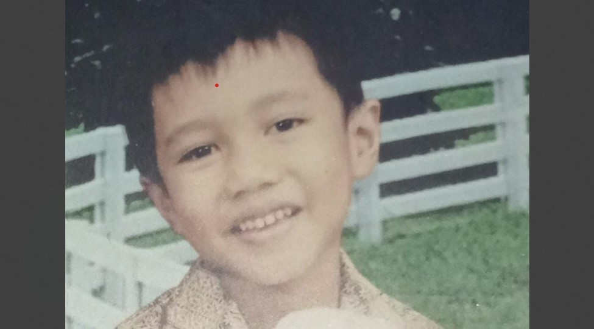

The Beginning
Jumat, 14 Mei 2004 selang beberapa menit menuju waktu Salat Jumat. Seorang Nabil Hamzah Ash-Shiddiq lahir di Kota Padang, Sumatra Barat. Tepatnya lahir di Klinik Semen Padang yang terletak dekat dengan area pabrik. Nabil kecil belum mengerti apa-apa dan tidak tahu apa yang akan terjadi padanya di masa depan. Satu hal yang ia tahu adalah kelak ia akan menjadi orang yang memberi manfaat pada sekitarnya.


